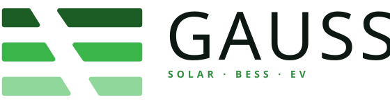

BRAND · 05
Logo & lockup
Three green stripes with a diagonal cut, paired with the Bebas Neue wordmark and the tagline SOLAR · BESS · EV. One mark, two finishes — colour on light, reversed on dark.
The mark
COLOUR · ON LIGHT
REVERSED · ON DARK
Lockup — mark + wordmark + tagline

Size & application
24 px · min
40 px · nav
64 px · header
96 px · hero
Don't
don't tilt
Mark sits flat on its baseline. No rotation, no "dynamic" angles.
don't desaturate
Keep the three greens. No greyscale, no single-colour fills.
don't float on busy photos
Back it with a solid panel for contrast and clear space.
don't recolour the field
Reversed mark goes on ink or brand green — not arbitrary colours.